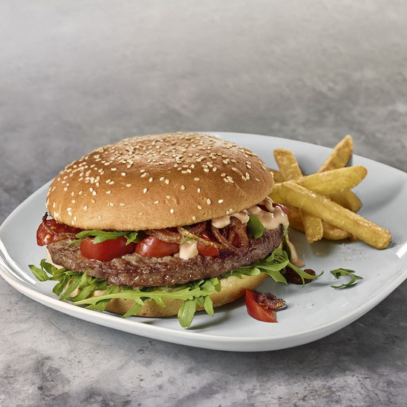

Basic Burger

Description
These burger patties are made with ground beef and an easy bread crumb mixture.
Tile these burgers with your favorite condiments and pop open a cool drink!
Ingredients
- 1 large egg
- ½ teaspoon salt
- ½ teaspoon ground black pepper
- 1 pound ground beef
- ½ cup fine dry bread crumbs
Steps
- Preheat an outdoor grill for high heat and lightly oil grate.
- Whisk together egg, salt, and pepper in a medium bowl.
- Add ground beef and bread crumbs and mix with your hands or a fork until well blended.
- Form into four 3/4-inch-thick patties.
- Place patties on the preheated grill. Cover and cook 6 to 8 minutes per side, or to desired doneness.
- Put the patties on the burger and add toppings.
- Serve hot and enjoy!